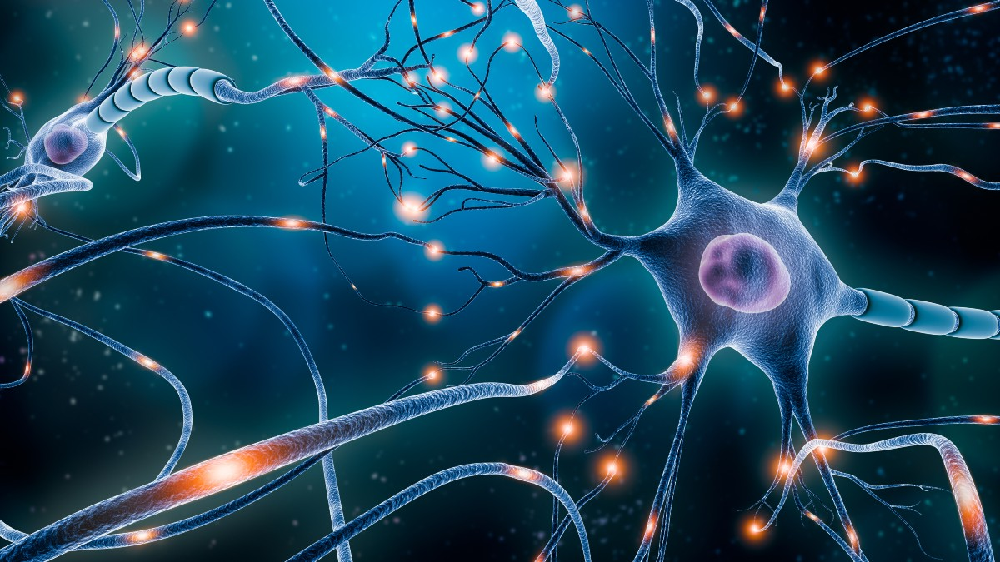

The Story
Billions of years ago, early multicellular life faced a monumental challenge: how do you get different parts of a body to communicate quickly? The evolutionary answer was the neuron, a specialized cell designed to fire tiny electrical charges. In simple lifeforms like jellyfish, these neurons form a loose, decentralized "nerve net" that allows the creature to react to touch and light without a true brain.
As life grew more complex, these networks began to cluster together, eventually forming central processing units: brains. Whether it is a hawk spotting a mouse from a mile away or a human reading a sentence, the underlying mechanism is the same. Sensory organs act as biological antennas, gathering data from the outside world—light waves, air pressure, chemical molecules—and translating them into electrical spikes. These spikes travel down nerve fibers at speeds up to 268 miles per hour, crossing microscopic gaps called synapses using specialized chemicals known as neurotransmitters.
The brain then receives this storm of electrical data, processes it in milliseconds, and fires new signals back out to the muscles to command a reaction. It is an awe-inspiring loop of input, calculation, and output. Your nervous system is the sole reason you can experience the warmth of the sun, the pain of a burn, or the memory of a loved one. It is the biological hardware that allows the universe to look back at itself and wonder.

Philosophical Questions
Is our perception of reality just a highly detailed hallucination?
Your brain is locked inside a dark, silent skull. It never directly touches the outside world; it only receives electrical signals from your eyes, ears, and skin, and then guesses what is happening outside.
This means the colors you see, the sounds you hear, and the physical solidity you feel are all just models constructed by your nervous system. It raises the unsettling philosophical concept that we do not experience true, objective reality—we only experience the custom-built virtual simulation that our brain generates to help us survive.
At what point does an electrical signal become a conscious thought?
If we examine a single neuron under a microscope, it is just chemistry and electricity. It is not self-aware. If we connect two together, they still do not "think."
Yet, when you connect 86 billion of these mindless, biological wires inside a human head, "you" suddenly wake up. This is the "Hard Problem of Consciousness." It forces us to ask how the physical movement of sodium and potassium ions across a cell membrane can possibly give rise to the subjective feeling of being alive.
Are nervous systems the only way the universe processes information?
We define thinking strictly through the lens of our own animal biology. But when we look at the Wood Wide Web connecting a forest, or the intricate, pulsating data flowing through human-made computer networks, we see striking similarities to our own neural pathways.
This challenges human exceptionalism. If intelligence is simply the processing of complex information to adapt to an environment, perhaps forests, oceans, and even artificial intelligence possess forms of "mind" that are simply too vast or too alien for our specific nervous system to recognize.